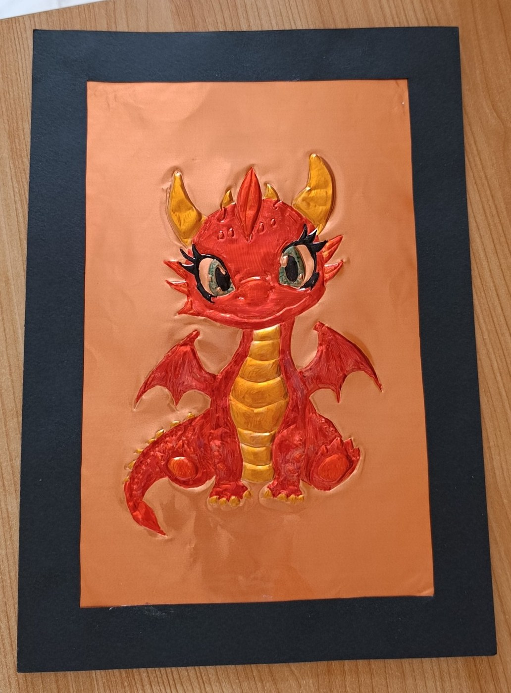
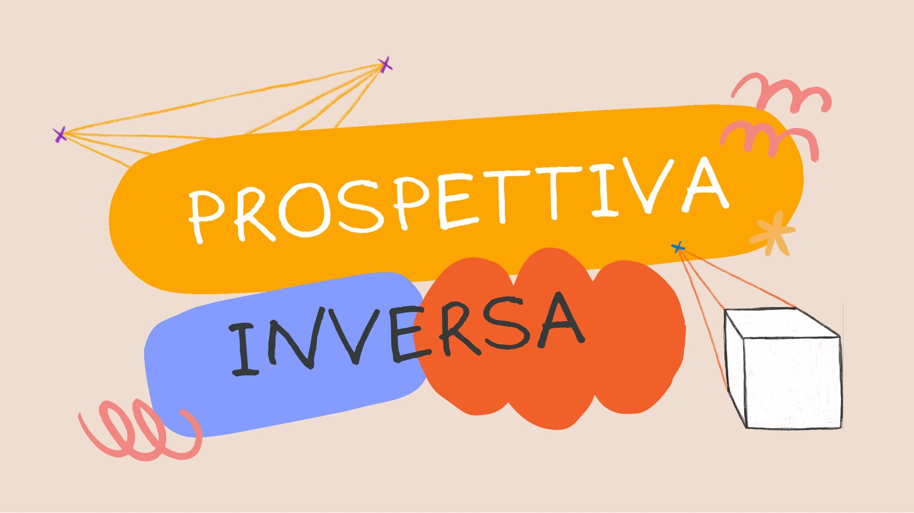
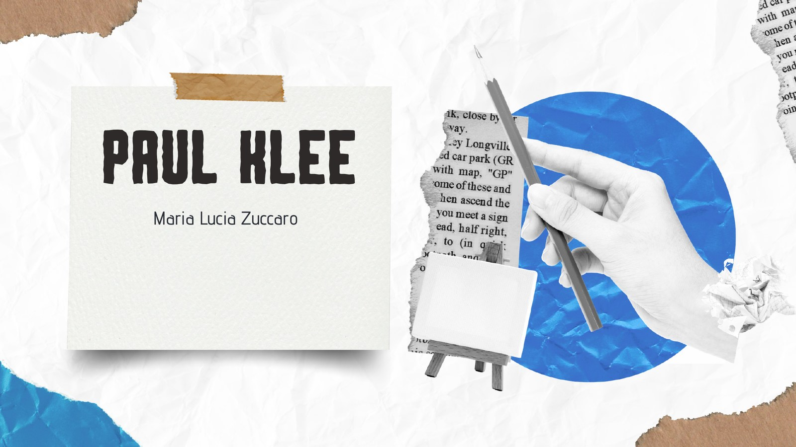

Percorsi didattici
Laboratori
Una raccolta di attività svolte o proposte in classe, con presentazioni, indicazioni operative e documentazione dei lavori realizzati dagli studenti.
 Classi prime • inizio anno scolastico
Classi prime • inizio anno scolastico
La cartellina porta disegni
Il primo lavoro delle classi prime: una cartellina personale per raccogliere gli elaborati di Arte e Immagine durante il triennio e portarli, infine, all’esame.
Apri il laboratorio → Classi prime • arte egizia
Classi prime • arte egizia
Profili egizi
Fotografia di profilo, collage, copricapi e scrittura geroglifica si combinano in un autoritratto ispirato all’arte dell’antico Egitto.
Apri il laboratorio →
Classi prime • 1A e 1E • 2025–2026Sbalzo su lamina di rame
Una proposta manuale e decorativa: il disegno viene riportato con la carta lucida, lavorato a rilievo con gli strumenti per il DAS, colorato con pennarelli indelebili e montato con una doppia cornice in cartoncino nero.
Apri il laboratorio →
Classi terze • aprile–maggio 2026Prospettiva inversa: lo spazio che inganna
Un’esperienza tridimensionale ispirata a Patrick Hughes, nella quale il disegno prospettico e la forma piegata producono una sorprendente illusione spaziale.
Apri il laboratorio →
Percorso didattico • Paul KleeLa poesia si traduce in immagine
Parole, lettere e colori diventano una composizione visiva ritmica, ispirata alla ricerca di Paul Klee sul rapporto tra scrittura, musica e immagine.
Apri il laboratorio →